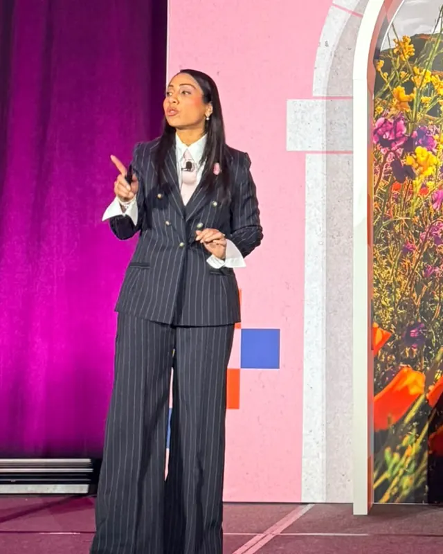
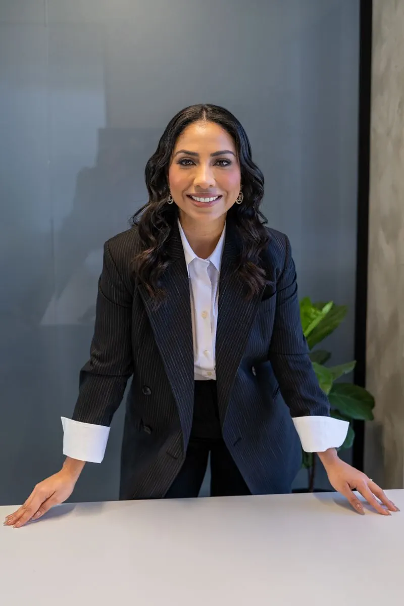
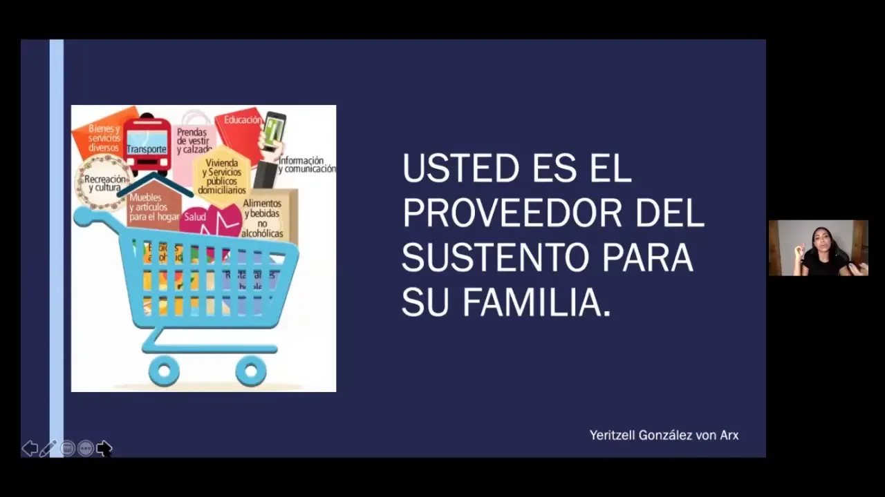
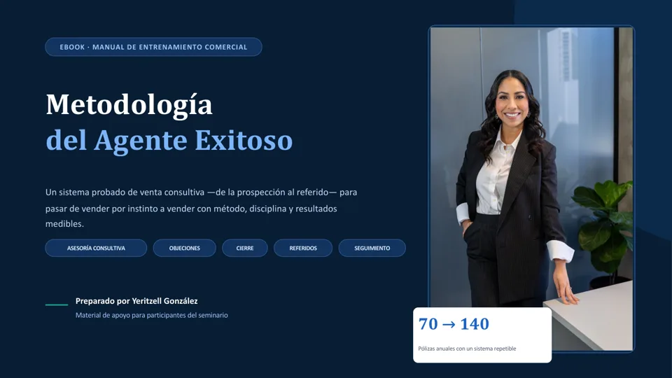

Para quién
25–40
años. Corredores de seguros en sus primeros 3 años de carrera.
Speaker InternacionalEmpresariaExperta en Liderazgo y Ventas Remotas
El talento no es lo que te frena. Es el paradigma.
16 años en seguros. Lidero mi correduría en Panamá desde Suiza, a distancia y con sistema. Formo a los corredores que empiezan para que produzcan en sus primeros 3 años.
01A quién ayudo
Para quién
25–40
años. Corredores de seguros en sus primeros 3 años de carrera.
El resultado
3 años
Que produzcan desde el inicio, con método, disciplina y resultados medibles.
El mecanismo
Paradigmas
Transformar las creencias que frenan la venta: pasar de vender por instinto a vender con método.
Es para ti si…
“Que un corredor nuevo produzca en sus primeros 3 años.”
— Yeritzell González
02La metodología · Conferencia
Tres fases que se repiten y se alimentan entre sí, y una clave que las sostiene. Toca cada fase o recórrelas bajando.
“Tus clientes son tus acres de diamantes.”
El primer contacto no se centra en vender: abre una conversación profesional, genera confianza y propone una reunión breve con un propósito claro. Referencia, valor y una propuesta concreta de cita.
Comprender antes de recomendar.
Cada reunión sigue una agenda: escuchar con profundidad y construir el ADN del cliente (familia, finanzas, riesgos, metas y cómo decide). La asesoría virtual se siente cercana con estructura, escucha y un próximo paso claro.
El seguimiento no es insistir: es acompañar.
Ninguna reunión termina sin una tarea registrada, una fecha y un próximo contacto. Cada cliente bien acompañado se convierte en referidos, y el ciclo vuelve a empezar, más grande.
actividades diarias no negociables. El crecimiento no depende de vender más, sino de ejecutar mejor cada etapa, todos los días.
“Cambia tu paradigma y el círculo del asesor será infinito.”

Conferencia
Lleva “El Ciclo del Infinito Asesor” a tu evento, convención o equipo comercial.
Solicitar la conferencia →03Lo que hago hoy
Vivo en Suiza, hablo alemán y lidero mi correduría en Panamá a distancia. Mi día a día es la prueba de que las ventas y el liderazgo remoto funcionan cuando hay un sistema repetible.

01
Socia fundadora de G&P Seguros. Dirijo la correduría en Panamá desde Europa, con procesos que no dependen de estar presente.

02
Speaker internacional. Llevo El Ciclo del Infinito Asesor a eventos, aseguradoras y equipos comerciales.

03
Acompaño a corredores en sus primeros 3 años para que produzcan con método, en sesiones 1:1 y en programas grupales.
Escenarios y trayectoria
04Recursos gratuitos

▶ReproducirAl reproducir se carga YouTube.

Ebook gratuito
Un sistema de venta consultiva, de la prospección al referido, para pasar de vender por instinto a vender con método, disciplina y resultados medibles. Déjame tus datos y descárgalo.
Índice
Lo que vas a encontrar
Parte I · Trabajo virtual
Parte II · Fundamentos
Parte II · Ejecución comercial
05Manifiesto · La filosofía del agente exitoso
No vendemos pólizas. Ayudamos a las personas a proteger su patrimonio, sus ingresos, su familia y sus metas futuras.
Escuchamos más de lo que hablamos.
Vendemos tranquilidad, no pólizas.
El seguimiento no es insistir: es acompañar.
El crecimiento no depende de vender más, sino de ejecutar mejor cada etapa.
Un agente exitoso no presiona al cliente: lo guía.
Cambia tu mente y cambiarás tus resultados.
— Yeritzell González · Metodología del Agente Exitoso
06Trabajemos juntos
“El Ciclo del Infinito Asesor” para convenciones, aseguradoras, corredurías y equipos comerciales: prospección, conexión y multiplicación con disciplina diaria.
Acompañamiento personal para que produzcas en tus primeros 3 años. Trabajamos tus paradigmas, tu agenda y tus números.
Un recorrido de 4 a 8 semanas con un grupo de corredores: el método completo, puesto en práctica semana a semana.
¿Eres una marca?
Colaboraciones con mi canal y mi comunidad de corredores. Escríbeme con tu propuesta.
Proponer colaboración →07Contacto y redes
Conferencias, mentorías, programas para equipos o colaboraciones de marca. Escríbeme por el canal que prefieras y te respondo personalmente.